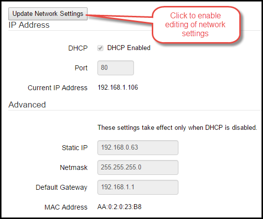

Settings
The Settings page allows you to customize settings and perform administrative tasks on the BCS.
Device Settings & Info
This section allows you to customize the name of your BCS and view the current version of the firmware that is loaded on the BCS. To change the name of your BCS, simply type in the name you desire then hit the TAB key. The name is saved automatically. The BCS Utilities link will take you to the online utilities web site. See the Online Utilities section for more information.

General Settings
To use Celsius instead of the default of Fahrenheit, check the Celsius box.
To set the alarm to Register 10, check the box. For more information on this setting, see Example 4 on the Ladder Logic page.
To configure an email address to send messages to, enter an email address.
Authentication
You can configure an administrator password to prevent unauthorized access to your BCS. This is especially useful if you have setup your BCS to be accessible from the Internet. In addition, you can also configure a read-only password that allows users to view your BCS, but not change any of your settings.
To require users to authenticate, check the Require Authentication box. If you do not set a password, the default password is control. The default user name is admin. To assign your own admin password, enter it in the Password and Confirm Password boxes. You can also assign a Read-Only password in the Read-Only Credentials section.

Temperature Probes
In this section, you can configure custom names for your temperature probes and customize the coefficients for the temperature probes. The BCS is pre-programmed with the default coefficients for temperature probes from Brewers Hardware. If you bought temperature probes from a retailer other than Brewers Hardware, please see the coefficient settings from the manufacturer. To assign a name to a temperature probe, simply type the name in the proper box. If you are not using all the temperature probes, uncheck the Enabled box for that probe to prevent it from showing up on the Main Control page and other menus.
Discrete Inputs
To assign names to your Discrete Inputs, enter the desired name in the name box for the DIN. By default, all the DINs are enabled. You can disable DINs by unchecking the Enabled box for individual DINs. This will prevent the DINs from showing up on the Main Control page and other menus.
The One-Shot check box enables one-shot capability on the DIN. One-shot is useful for using DIN to manually changes states in a process (see the Exit Conditions section on the Process Editor page. By checking the One-Shot box, the DIN (assuming you have a switch or button connected to it) you would trigger the exit condition and not have to worry about accidentally holding down the button and cycling rapidly through states.
Outputs
You can assign custom names for your outputs by typing in the desired name in the appropriate box. You can also choose whether or not an output is enabled or disabled by checking or unchecking the Enabled box. Disabled outputs will not appear on the Main Control page or other menus.
Auto-Ignition
The Auto-Ignition section allows you to customize the behavior of electric igniters and burner valves. For instance, in the graphic below the gas valve is connected to output 0 and is therefore the Trigger Output. The Igniter Warm-up Time is the amount of time that the Trigger Output will be delayed while the igniter begins firing. The Ignition Time is total amount of time that the igniter will fire. The Igniter Output is the output to which the igniter is connected (in this case, it is output 11).
PID Settings
PID is very useful in brewing applications since it is a predictive algorithm that reduce variations in temperature swings. PID mode is able to provide a tighter temperature range variance than Hysteresis mode, but is not suitable for all applications. For instance, PID mode is not always suitable for controlling a freezer or refrigerator since it may cause the compressor to cycle too often. PID stands for proportional-integral-derivative. The PID algorithm is able to maintain a tighter temperature range without over-shooting the target temperature.
Depending on your system, you may need to adjust some settings to optimize performance. This usually takes some experimentation since all systems are different. The PID Settings that are configured here relate directly to the Output Control (Configurable) section on the Process Editor page. If you choose PID as your mode on this page, the temperature probe you select will be used in the PID calculations for that output.
The most common adjustments will be made to the Sample Period, Output Period, and Max Pulse % boxes. The Sample Period is how often the PID process samples the temperature from the associated input expressed in seconds. The Output Period (expressed in seconds) relates directly to the Max Pulse %. The BCS uses pulse width modulation (PWM) to control electric devices. As a result, if the Output Period is 10 seconds and the Max Pulse % is 80, then the output will be on for 8 seconds during that 10 second period.
If you are using Duty Cycle as your mode on the Process Editor page, the number you entered in the Setpoint column is the percentage of time that the output will be on. The Output Period is used to determine how many seconds the cycle will be. For instance, if you configured the duty cycle Setpoint to 70 and the Output Period to 10, for every 10 seconds the output will be on for 7 seconds and off for 3 seconds.
Expansion Devices
LED display devices can be added to the BCS by connecting them to the EXP0 and EXP1 connections. LED displays are useful when you are building control box and/or you want to display temperatures without having to use a computer. LED displays are available from retailers like Brewers Hardware. To associate a temperature probe with an LED display, enter the correct address for LED (most ship with the default address of 0x2a, follow the manufacturers directions for the customizing the address) then choose the associated temperature probe.
Networking
In order to access the BCS over a network, the BCS must have a valid IP address. The easiest way to accomplish this is to use DHCP to automatically assign an IP address. DHCP is enabled by default, so if you have a router or DHCP server on your network, the BCS will be assigned an IP address. To find the IP address that was assigned to your BCS, you can either look on your router or DHCP server to see which IP address was assigned to the BCS MAC Address. You can also use the BCS Finder.
Before you can make changes to your network settings, you must first click on the Update Network Settings button. This will enable the ability to edit the network settings. After you make your changes, click on the Reset BCS button for the changes to take effect.

If you are using port forwarding, you may want to use a non-standard TCP port on the BCS. To change the port assignment, use the up and down arrows in the Port box.
To manually assign an IP address to your BCS, uncheck the DHCP Enabled box, enter you IP address information in the Advanced section, and click on the Reset BCS button.
Firmware Upgrade
To upgrade your BCS to the latest firmware, you must use TFTP which is a simple program used to transfer files on the local network. There are several free TFTP servers available on the Internet. Download the firmware file to your computer and follow the instructions for setting up your chose TFTP server. Enter the IP address of your TFTP server in the IP Address box and click the Upgrade button. Once the download is complete, the BCS will take a few minutes to install the upgrade and reboot. Be sure to back-up your configuration before you upgrade.
System Reset
If you need to reboot the BCS, click on the System Reset button. To reset the BCS to the default settings (all configurations will be lost), click on the Reset to Defaults button.